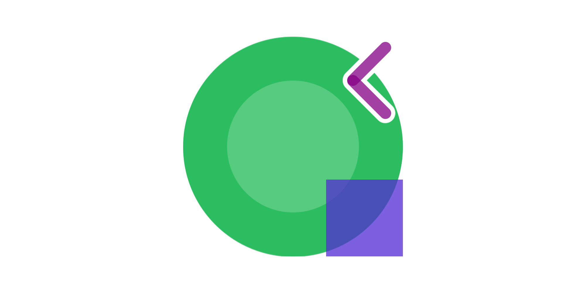

RoguePlanetoid Weekly Update #16
28th April 2023

This week I was at two new events, the first was the BBC North East Technology Hub Meetup at BBC Newcastle
which was their very first event held in the new space which used to be their club and bar. It was great to hear from those working there including some of their plans
for what they'll be doing in the North East as well as their desire to be an integral part of the tech community, this was followed by discussion about Generative AI.
The second event was DevHub North - April 2023 and although not a new event was new to me, which was about Developing in a Data Rich Future and
Automating the hard part of AWS account management with a Step Function driven vending machine offering, it was great to go along and was the most well-attended event I have
been to this year so far, I also expressed my desire to do a talk in future!
I've recorded and edited the next episode of the RoguePlanetoid Podcast on Spotify for Developers. I've also taken on board some advice
from Jamie Taylor host of the The .NET Core Podcast when he appeared on Zero to 600k Podcast Downloads
with Steve Worthy, they were both amazing and had so many great ideas and also appreciated them mentioning me on the show! The first thing I am doing is to publish
transcripts of all the Episodes when the latest is published on Monday. For future Episodes of the RoguePlanetoid Podcast I'll hopefully
apply more ideas and suggestions as I go along, I really appreciated the advice and help I've already had so far, it has been invaluable and looking forward to appearing on The .NET Core Podcast
in the future!
Next week I'll be working on a project for a Learning at Work week which involves creating Blazor Emoji Bingo, I've been working on the game itself and will
be putting together the session for it ready to be shared next month at work and will also share this later on tutoriar.com!
Once that project is done I'll be preparing for Microsoft Build 2023 next month which I'll be writing Articles
for along with an Episode of the RoguePlanetoid Podcast!
RoguePlanetoid Weekly Update #15
21st April 2023
This week I paid another visit to Maker Space where I got my 3D printer working and printing again after so many years of it sitting unused but it had been well looked
after and was able to create a couple of objects which started with a test cube I had created when I first got the printer and was pleased that was succesful!
It is also great to see so many new members, including one who was interested in 3D printing and was great to be able to talk to them and show then the succesful print
afterwards, looking forward to creating more things with it and seeing what kind of projects I can create in the future at Maker Space.
I've finished writing the next episode for the RoguePlanetoid Podcast on Spotify for Developers, this will also have a companion
article to go over a few things there too and both mention my Spotify.NetStandard library for
using the Web API from Spotify using .NET. I was pleased to see that Spotify.NetStandard has got over 10,000 downloads since
it was first released a few years ago and am happy to see so many developers have downloaded it, am curious what they have used it for but have used it myself in a few projects
including the Blazorfy workshop I did last year, and it is still being kept up to date!
Next week have a couple of new events including a brand-new even with the BBC North East Technology Hub Meetup and my first time at DevHub North,
so I'm looking forward to checking out both of those meetups. I've already been to more events this year than all the events last year and will be at some larger events later this year,
including Scottish Summit, which will be in Manchester rather than Scotland along with the very different event of
CrimeCon in London. I'm also interested in doing some of my existing talks again for some user groups so if want me to come a
long either online or in-person then let me know via Twitter.
Maker Space - 19th April 2023
20th April 2023

Welcome Wednesday at Maker Space Maker Space is a great way to see what is going on there for anyone new who wants
to check it out and become a member and for existing members it is a great way to see new people and catch up with other members. This Welcome Wednesday I returned to Maker Space try and
get my 3D printer working again after so many years of sitting in storage, last week I had already cleaned it up and replaced the filament but this week it was time to print something!
I tracked down my original test cube when I first got my 3D printer working nearly four years ago so selected this to print and after making sure the filament was coming through correctly,
I began to attempt a print. However, the temperature of 183 Celsius wasn't possible so it refused to start printing the cube, however it could get to around 173 Celsius, so I stopped the print
and adjusted the temperature to that and was able to begin printing the cube. After just over half an hour I had successfully printed the cube, I was also joined by a new member who was
interested in 3D printing, so they were also pleased to see the print was successful.
I decide to 3D print another object, which was a computer mouse, although it was a bit smaller than designed and wasn't perfect it was fine and am looking forward to being able to print
something else with it! Afterwards we all head out to the pub to have a chat and talk about things together and is a great way for new members to get to know their fellow members a bit better too,
so if you live in the North East or are just visiting then feel free to pay a visit to Gateshead for Maker Space on the next Welcome Wednesday!
Spotify.NetStandard
16th April 2023

Spotify.NetStandard has reached over 10,000 downloads since it was originally released in 2019!
Since then it has been updated with a few minor versions and a couple of major versions with the most recent update with some minor changes today, it is amazing to see how popular this Package
has become, which originally started as a weekend project to see what I could do with Spotify for Developers.
Spotify.NetStandard has also helped me create a few versions of a Presentation about Spotify for Developers along with being the basis of Blazorfy
which was a Workshop that combined Blazor and Spotify.
If you would like to hear about Spotify for Developers then you can check out the next Episode of RoguePlanetoid Podcast!
RoguePlanetoid Weekly Update #14
14th April 2023
This week was pleased to see the video of the two talks for NEBytes on How to move from Manual Testing to Automated Testing with Postman by Ian Douglas
and my own on Microsoft & AI are now on YouTube. I[m pleased the video already has around thirty views as of this post,
so feel free to check it out and catch up with both talks if you missed them! I really enjoyed putting together the Microsoft & AI and spent quite a long time putting it together, even updating it an hour
beforehand as things were being announced then that I was able to include!
This week I posted some Blazor Games which ported across some of the games I had done for Windows App SDK to Blazor, not only
that while doing this I also learned how to publish the games to GitHub Pages which was really interesting and something
I will do with Blazor examples in the future. I've also made a start on a project using Blazor for work as they asked me to present something for their
Learning at Work week they are doing next month, so is great to be doing more Blazor again!
I've started writing the fourth Episode of the RoguePlanetoid Podcast which I can exclusively reveal here will be about Spotify for Developers which
is something I've had an interest in over the past few years and is good to cover once more but this time in a Podcast and get more developers aware of this service from Spotify!
Maker Space - 12th April 2023
13th April 2023
It was great to be back at Maker Space again yesterday and get started with a project! Mine was to get the Eaglemoss Vector 3 3D Printer from the
Eaglemoss 3D Create & Print Partwork working again after being unused for a few years. My 3D printer had been well looked after and was only a little
dusty on the top but with a bit of a clean and checking of a few components I was able to breathe life into it again, after locating the software which took
a bit of time as the publishers and the website for the partwork were long gone.
I was able to remove the filament that had been left within the extruder the past few years once I was able to connect and command the software to heat it up and retract the piece.
The rest of the filament itself was not able to be used, as it was degraded after so much time, but I was able to load up the 3D printer with some brand-new filament and will be ready to do a
test print on my next visit to Maker Space!
Maker Space is open most weeks on Wednesday for existing members and new members as part of Welcome Wednesday and if you want to read more
about it then you can check out the Article I wrote about Maker Space then come along next Welcome Wednesday to MakerSpace!
RoguePlanetoid Weekly Update #13
7th April 2023
This week was the first week in a while that might have had no events to go to if it hadn't been for Maker Space having their first Welcome Wednesday in their new
Gateshead home! It was great to be in Maker Space again and wrote an Article about Maker Space that features some photographs I took of the new place.
It was great to see everyone there and chat to people I'd not seen for years and soon seemed like no time had passed since the last time I had been there over three years ago,
looking forward to going to Maker Space again soon!
1st of April was April Fool's Day but you wouldn't have been a fool for checking out the latest Episode of the RoguePlanetoid Podcast about Microsoft & AI,
it was great to put this Episode together and cover this topic more, after doing my presentation about it at NEBytes
was good to talk a little more about it, things are changing so fast in that space as the episode had extra bits recorded after the initial recording right up to the day before it was released!
Talking of podcasts was very pleased to see that my wife's podcast, Scottish Murders, had been shortlisted for Best Indie Podcast at the
Inaugural CrimeCon UK True Crime Awards in London this year, so will be great to go along for that in June along with
CrimeCon itself a few days later and help represent Scottish Murders!
I had submitted a talk to the Scottish Summit for this year, How sharing can make you a better developer,
for their on-tour event in Manchester, England. However, I was not selected, but the positive thing is I now have an extra session I can attend and from the other talks that did make
it they all sound interesting so will be tough to pick which ones to attend but know whatever ones I pick I'll learn something from those sessions! There is some good news they are
doing a Pre-Day YouTube event and have already mentioned I'd like to participate so am pleased people may be able to see the talk beforehand and am looking forward to going along
to the Scottish Summit on the 5th of August!
RoguePlanetoid Podcast - Episode Three - Microsoft & AI
1st April 2023

Today sees the release of Episode Three of the RoguePlanetoid Podcast
about Microsoft & AI with details of the new new AI-powered experiences
from Microsoft such as Microsoft Designer, Bing,
Microsoft 356 Copilot, GitHub Copilot and more.
You will find the Podcast where you listen to your podcasts such as Spotify,
Amazon Music, Stitcher, Apple Podcasts, Pandora
Google Podcasts along with YouTube where you can catch up with previous episodes
and Subscribe or Follow so you don't miss any future Episodes.